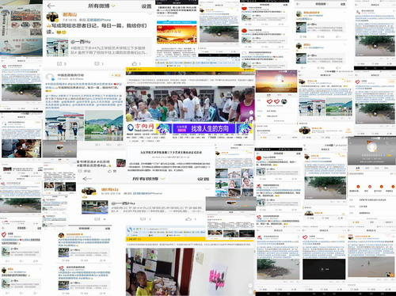

发布日期：2017-08-17
本着服务社会，奉献社会的宗旨，今年7月，艺术学院湖口“三下乡”服务队和都昌文化艺术团服务指导队主要成员均为大一大二学生，由艺术学院团委具体进行指导。近年来，艺术学院一直组织学生开展暑期“三下乡”活动，主要服务对象为社会孤儿院、服刑人员子女、以及乡村留守儿童等弱势儿童群体。活动中，队员们利用自身专业优势为孩子们带去艺术类指导、支教服务。迄今，艺术学院“三下乡”服务队已连续四年奔赴湖口县一甲村开展服务活动。与以往不同的是，今年艺术学院的服务队发展为两支队伍，一支队伍继续前往湖口，而另一支队伍则出发都昌太阳村社会福利院机构，此次艺术学院两支服务性队伍皆引起了较好的社会反响。

在本次艺术支教服务过程中，“三下乡”支教队员们每日将自身支教有感发布在微博上，希望获得社会各界人士的关注，呼吁群众关爱社会弱势儿童群体。功夫不负有心人，终于得到了来自于社会各界的关注。其中，中国青年志愿者协会副会长、头条文章作者谢海山多次转发队员微博，并向社会群体呼吁关注，并获得北京志愿者俱乐部官方微博、中国志愿服务联盟官方微博“中国志愿服务行动”、中国志愿服务联合会“帮帮”天下行官方微博、宝贝回家广东负责人之一梁永宁、“邻里守望”志愿服务官方微博、东莞市爱心志愿者协会副会长王庆余、公益博主张家元、公益博主中国雷锋车队牧马人、星光公益研究院官方微博以及北京公益慈善报等多个公众媒体的关注与传播。搜狐网、方向网、湖口团县委微信宣传推送、《九江日报》及《浔阳晚报》对艺术学院的支教活动进行了报道。其中，谢海山老师还在喜马拉雅电台诵读了都昌支教服务志愿者的日记。

社会媒体对艺术学院“三下乡”志愿者事迹的广泛关注，也使得支教志愿者们感到付出是有收获，并且坚定虽然“三下乡”结束了，但志愿者精神仍在传递，同时也呼吁能有更多的人加入到这个群体，带动他人，为这个社会奉献自己的一份力量。